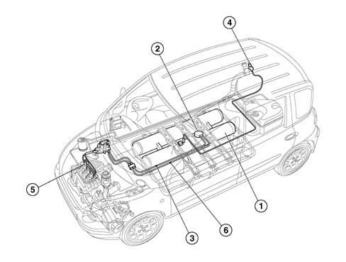
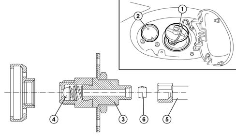
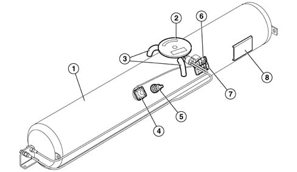
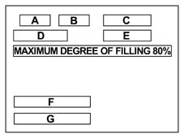
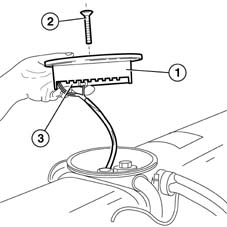
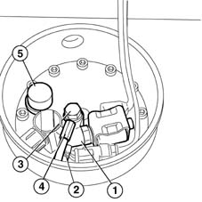

1043A gpl tank
- Path
- Descriptions > 10 ENGINE UNIT > 1043 LGP TANK AND PIPES > 1043A gpl tank
- Kind
- system description
- Applies to
- engines: 1.6 16v; all production periods; only with equipment: GPOWER
- Interactive page
- https://sloeber94.github.io/elrnDB-fMltpl/en/#/2888255
Applies to: engines: 1.6 16v; all production periods; only with equipment: GPOWER and Euro 3
CONSTRUCTION FEATURES
.

1, LPG cylinder (second cylinder supplied as an option) 2, Pump-Valve unit on cylinder 3, Pipe carrying LPG to pressure regulator 4, LPG filler fitting 5, Intake manifold with LPG injectors 6, Excess LPG recovery pipe
CONSTRUCTION FEATURES
LPG (liquid petroleum gas) is stored in compressed form under pressure. The pressure ranges between a minimum of 1 and a maximum of 25 bars according to temperature and LPG composition.
The gas container consists of a cylindrical tank (or two if requested as an option) that are filled through a special fitting connected to a rigid copper pipe connected to a valve that limits filling to 80%.
A solenoid on the cylinder cuts off the LPG flow to the supply system when the system is switched from LPG to petrol supply or when the engine is shut down.
The LPG is directed by a brushless a.c.submerged pump through a maintenance-free filter in the tank and a nylon fibre flexible pipe to a pressure regulation unit and then to injectors located directly on the intake manifold.
A return line collects uninjected LPG and sends it to the tank.
To ensure a constant pressure to the injectors and proper return flow of excess gas, the regulator ensures a pressure greater than 5 bars compared to tank pressure.
LPG FILLER FITTING
The LPG filler fitting (2) is located next to the fuel filler (1).
It includes a check valve (4) in the filler casing (3) connected to the LPG tank by means of a rigid copper pipe (5) with tapered fittings (6).

LPG TANK
Liquid LPG is stored at a pressure that ranges from 2 to 15 bars, according to temperature and LPG composition, in a cylindrical tank secured to the car floor.
The canister is made entirely from steel (in accordance with regulations) and by law is subjected to a hydraulic test at a pressure of 30 bars for tank category A and exceeds the impact and crash test legal requirements (in accordance with ECE 1024 and ECE 34).
The tank weighs some 41 kg and is surface-treated to a thickness of 60 microns with corrosion-proofing products. It consists of:
- chamber (1) containing liquid gas (which may be doubled to increase tank capacity when a second tank is ordered as an option) that contains a submerged LPG feed pump;
- a sealed chamber with a cover (2) and two vent pipes (3) leading to the outside that contain delivery and return valves in addition to electronic components controlling the submerged pump;
- a liquid LPG level detection device connected to the gauge via the LPG control unit located inside a magnetic transducer (4);
- an LPG refuelling 80% valve (5);
A plate (8) on the lower part of the tank shows tank identification data.

1, Chamber containing LPG in balance between the liquid/gaseous phases 2, Sealed chamber and cover 3, Vent pipes to the outside 4, Liquid LPG level gauge 5, 80% valve 6. LPG level sensor electrical connector 7. LPG pump management device electrical connector 8, Tank identification plate
The tank identification plate shows the following data:
A. construction date
B. type of tank (PAZ for single tank - PTH for double tank);
C. tank serial number
D. tank volume in litres
E. tank code (WVM for single tank - WVM 1966 for double tank);
F. fluid type/service pressure;
G. homologation codes
- for single tank:
E4 67R-010063 CLASS 1
PUMP INSIDE P02
E4 67R-010031 CLASS 1:
- for double tank
E4 67R-010044 CLASS 1
PUMP INSIDE 02
E4 67R-010031 CLASS 1.

A plate with the following words is on the tank: 'Non capovolgere' - 'Do not turn over' - 'Ne pas retourner'.
This requirement must be observed in the case of storage, warehousing or transport of the individual tanks.
If not, the oil present in the pump could come out, impairing the operation of the pump.
VALVE ASSEMBLY ON TANK
No maintenance work can be carried out on the valve assembly in the tank, commonly known as a 'valve unit'.
With the exception of the uptake soleniod coil and the submerged pump electronic control unit, every other intervention must be carried out by the tank supplier.
The valves are positioned in the tank in such a way as to allow part of them to be contained in a single chamber known as a sealed chamber. This is fitted with a cover (1) secured by a bolt (2) that separates it from the external environment.
The lower part of the cover is fitted with electronic components (3) that control the submerged pump. Althoug the underlying chamber is said to be sealed, it communicates with the external environment through two pipes that allow ventilation of the area surrounding the valves as required by international legislation. In this way, gas build-up due to minor leaks from the valves is prevented.

Each solenoid valve is electrically supplied by the ignition key by means of a special relay and is earthed via the inertia switch.
With the solenoid valve de-energized (engine switched off) the path towards the pressure reduction unit is closed.
With the solenoid valve energized (ignition key in ON position and engine running on LPG) the path towards the pressure reduction unit is opened, placing the canister in contact with the engine fuel system.
Unit components are listed at operational level:
- Normally-closed input solenoid (1) on the delivery pipe (2) that prevents LPG flowing from the cylinder to the engine when deactivated.
- One-way return valve (3) located near return pipe (4) from the pressure regulator valve. The function of the valve is to prevent LPG emerging frm the tank in the case of accidental pipe breakage. The valve also damps gurgling due to liquid falling into the tank.
- Mechanical valve commonly known as an 80% safety valve that cuts in during refuelling; when the volume occupied by the liquid gas inside the tank reaches 80% of total tank volume, the valve automatically blocks LPG refuelling.
This operating condition is essential because as the temperature increases, the liquid part of the tank contents may increase in volume and pressure could increase even though safety conditions are maintained.
Flow limiter on the intake solenoid. This cuts in to prevent sudden emergence of all the LPG due to the pressure difference in the case of accidental delivery pipe breakage.
The flow restricter is located inside the valve in order to remain inside the canister guaranteeing operation even in the solenoid valve breaks due to impact.
Safety device (5) that allows controlled LPG output if the pressure in the tank exceeds 27 bars (e.g. if there is a fire in the car) to prevent explosions.
